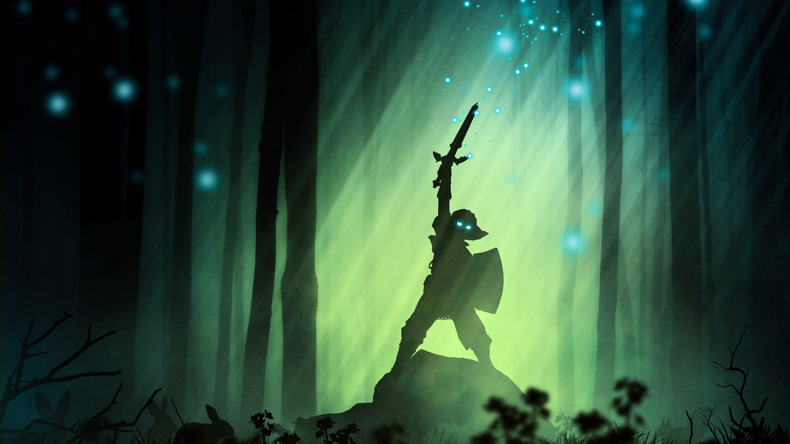
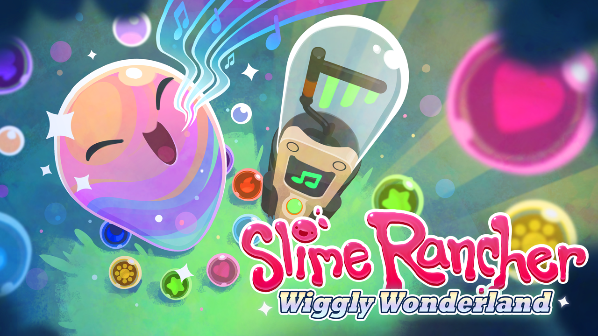
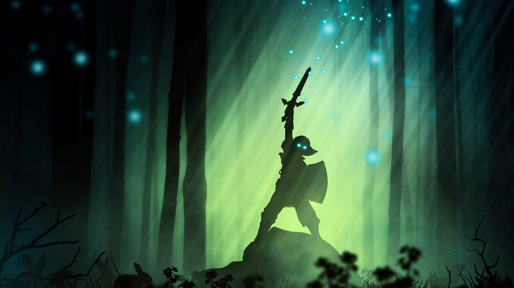
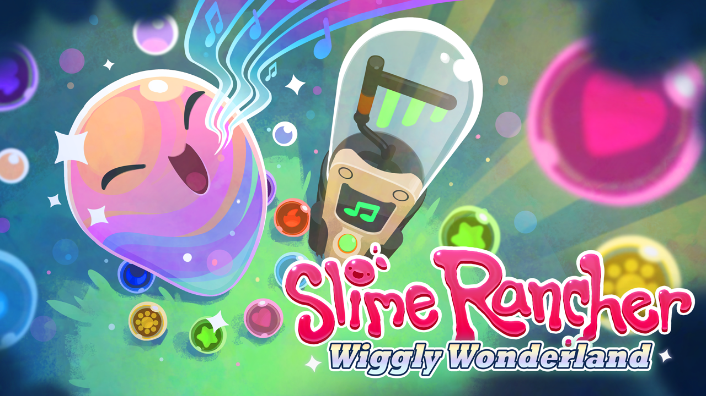

El RPP del parche 2.6.8 ha finalizado el 20 de febrero de 2020. Gracias por vuestros comentarios, ¡nos vemos en la temporada 20!.El 6 de febrero comienzan las dos semanas de pruebas del parche 2.6.8 en el RPP, ¡y necesitamos vuestra ayuda para que la temporada 20 sea la mejor de todas! Tenemos tres nuevos conjuntos de clase, un montón de cambios en objetos legendarios y una increíble e innovadora mecánica de temporada que dejará obsoletas vuestras configuraciones tradicionales. Consultad las notas preliminares del parche y empezad a teorizar, ¡el parche 2.6.8 está en camino!
Comentarios del desarrollador es el blog donde revelamos los procesos y filosofías que impulsan nuestras actualizaciones y diseños. En esta edición vamos a hablar sobre el proceso de equilibrar los conjuntos de clase en Diablo III, junto a los objetivos que tenemos para el parche 2.6.8 y los que vendrán en el futuro.
NO LE TIENEN MIEDO A NADA... SALVO A TI - SEGUNDO TRÁILER OFICIAL DE DOOM ETERNAL
The Legend of Zelda: Breath of the Wild se ha mantenido durante 150 semanas consecutivas entre los juegos más vendidos de la semana en Japón
Zelda Breath of the Wild: un jugador derrota en 11 segundos a uno de los jefes finales más poderosos
¡Felices fiestas, rancheros! ¡Estamos emocionados de traer de vuelta a Wiggly Wonderland este año! Este evento festivo de tiempo limitado celebra el final de otro año en el Far, Far Range. A partir del 18 de diciembre, recibirás visitas diarias de la misteriosa Slime. ¡Encuentra la Slime centelleante y recoge sus regalos especiales!

 


